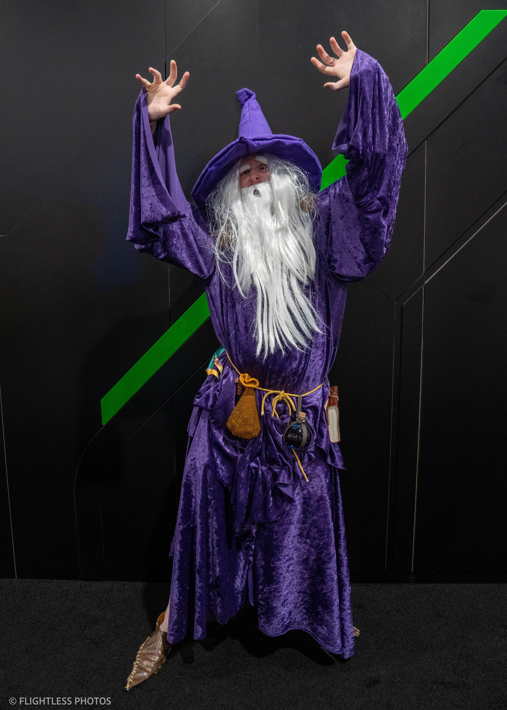
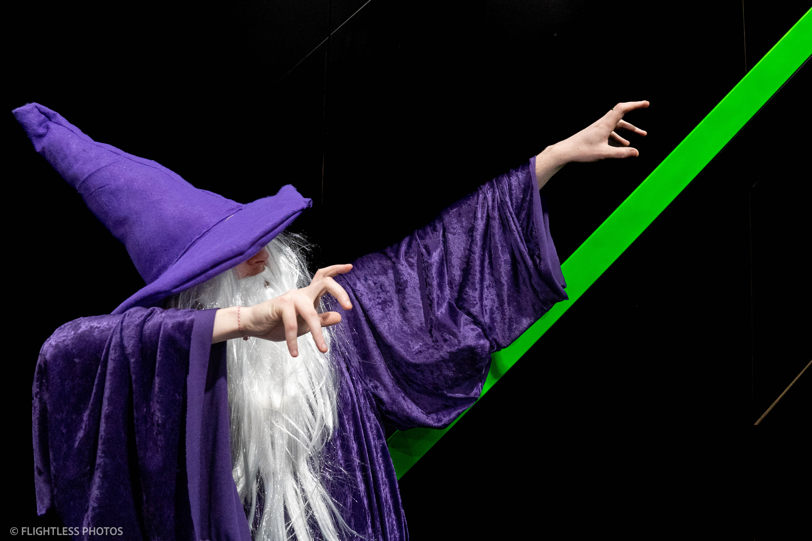
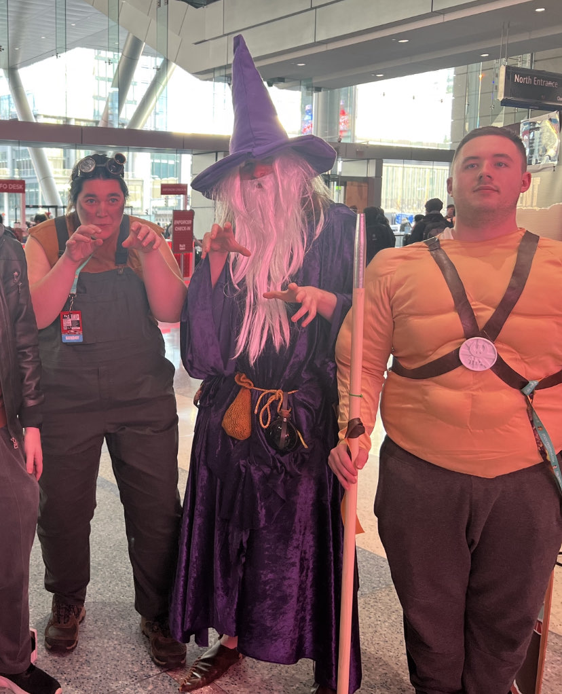

The Making of the Wizard Robe
The Making of the Outfit
I adore the concept of the high fantasy wizard. An old shrewd curmudgeon, wisened by decades of study and magic. I also happen to be able to pull a varily realistic old man voice. I also also to happen to have made cosplays in the past, ranging from video game characters to, well, more video game characters. Most of the time, it involves some sort of sewing. When I did both Faust and Axl Low from Guilty Gear on two separate occasions, I had to sew up back seams and sew in foam and in one case, sew a hoodie and a flannel together. I've been sewing since I was a child, so for the most part I was prepared. I was not prepared at all. It took a Joann's trip with 7 yards of crushed panne velvet to put into frame that this was going to be a heavy, heavy robe. Big shout out to the lady behind the counter who looked me up and down when I said what I was making and told me to grab double the fabric. I still have maybe a yard left over, but I used some to make bags and didn't have to make the third return trip to a dusty store on the side of a strip mall that was currently undergoing Title IX bankruptcy. With all this, I took my supplies to my school's makerspace and started hacking away. Here's the first draft, based on about 3 seconds of geometry in my head and a lot of cutting and loose sewing:
Okay it look like it belongs on someone's aunt. Not a cool aunt either, the kind of aunt that you see once a year on vacation with the extended family but will never stop talking about how she held you once when you were 7 months old Anyway, lets maybe put a hood on it or something?
Success! It shaped up rather nicely by simply turning it from divorced mom of two to assassin's creed character. However, it still wasn't... wizard enough. And such began the fun part - really steazing it up. First, I added some sleeves, but not regular sleeves. Some real bingo wings, the kind that drape to my hips and were big enough to have an internal pocket Next, I made a pair of leather shoes, bound with nothing but twine. Seen below, they're a replication of sorts of a 16th Century French poulaine And finally I made a hat of felt and batting, ripped from a how-to guide for a Harry Potter witch hat, which turned out much better than I expected.
A real pair of stompers huh? Now combine that with a pile of trinkets (a sac full of dice and coins, a leatherbound journal, and a potion bottle attached to a golden rope belt) and we have one beautiful finished product.
 
I should've also mentioned I had the itchiest beard known to mankind, as seen in the photos from a wonderous man who runs https://flightless.smugmug.com/ and was walking around with a camera Despite the beard and the shoes that felt like I was walking on concrete all day, I would say that this was probably my favorite costume I ever had the pleasure to wear. Sure, the prior competitors included one with an eye patch, one with a paper bad over his head with one single eye hole, and one involved carrying around a pair of 10 pound scythes, but we'll ignore that. I got to hang out with some friends I hadn't seen in months, we all went dressed up as a motley DND party and had a darn blast. If you haven't gotten to dress up for Pax or even gone to a convention, I would fully recommend it. My next goal is to go out to a ren faire and really ham up some wizard jokes, if I could survive the august heat wearing 5 pounds of velvet. However, maybe don't sew new clothing from scratch, it took me months.

Home
Flightless Photos